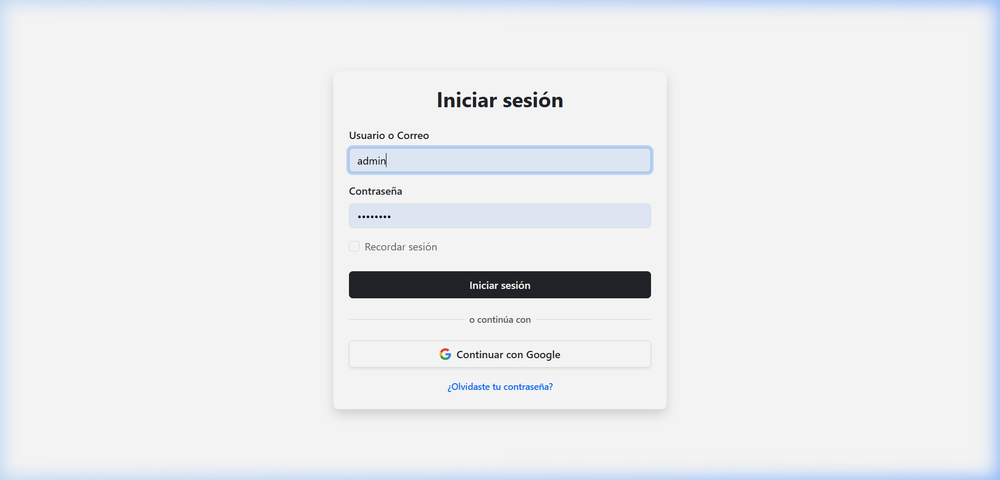
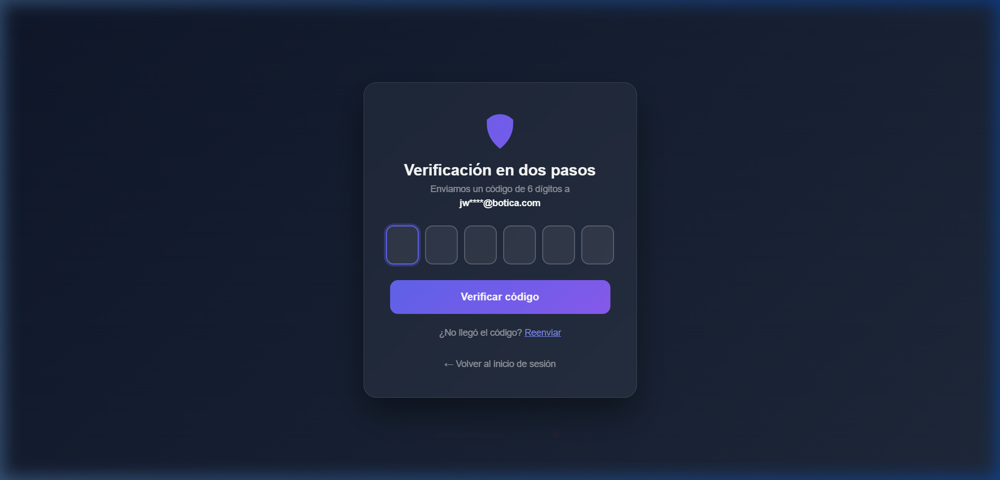
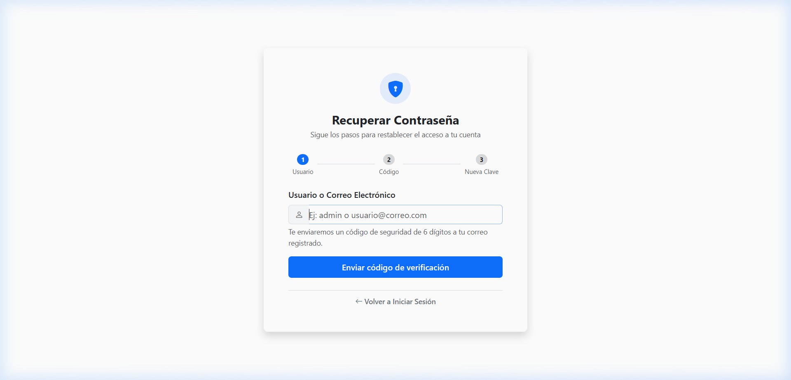
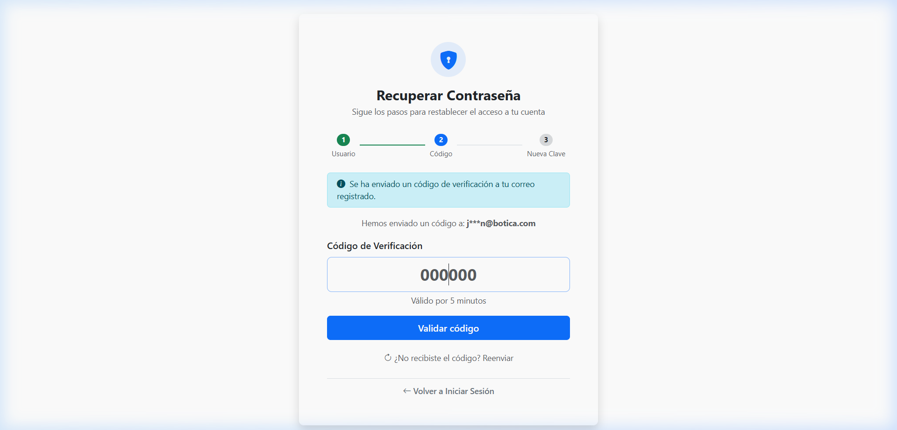
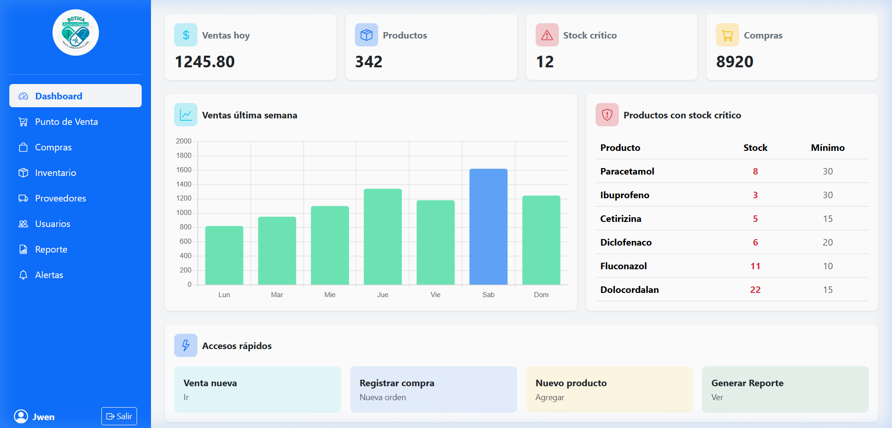
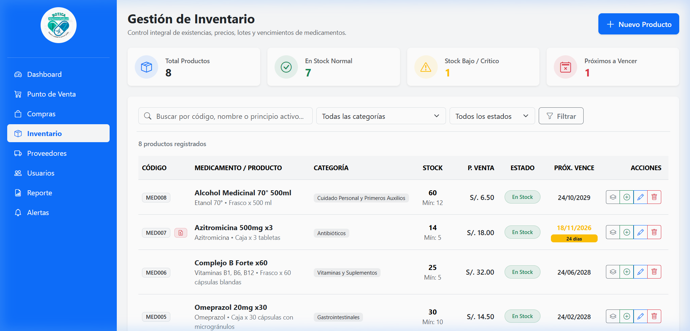
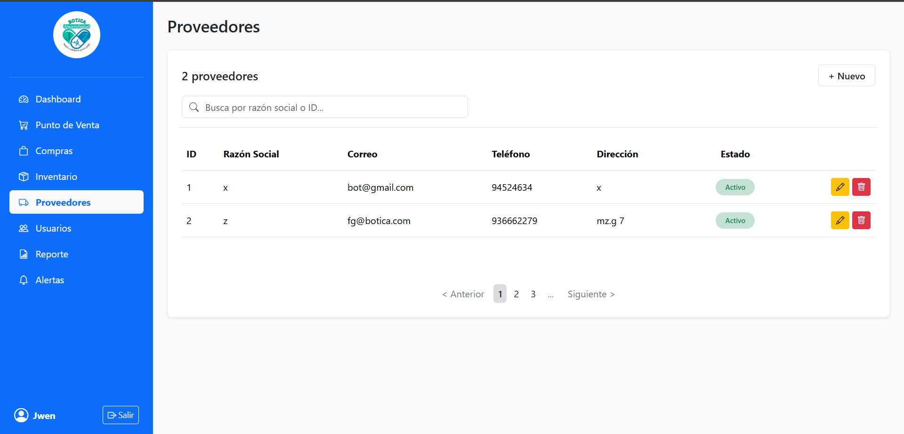
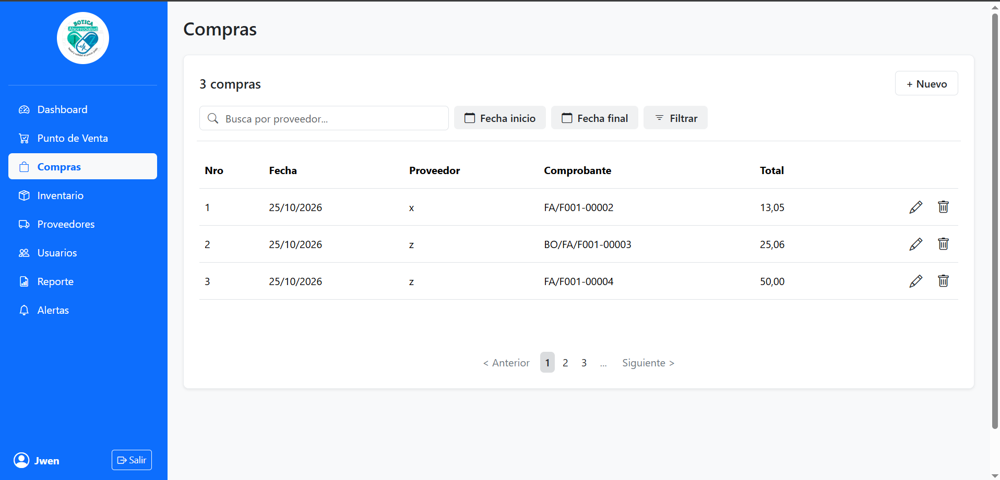
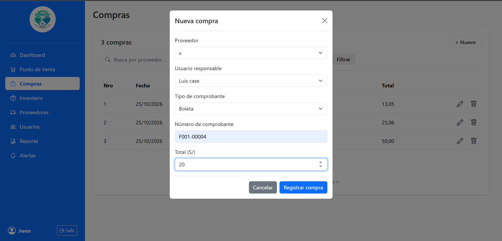
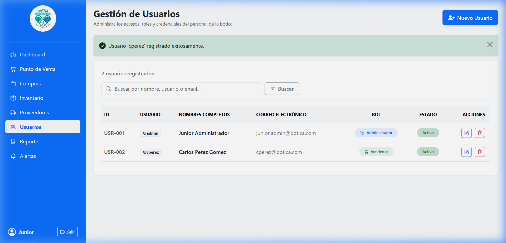

1. Introducción y Objetivos
El Sistema Web de la Botica "Ahorro y Salud" está diseñado para brindar al personal un entorno intuitivo, rápido y seguro para el control operativo diario de la farmacia:
- Control estricto de existencias: cálculo automático de stock por lotes y prevención de pérdidas por caducidad.
- Seguridad reforzada: protección de cuentas con doble factor de autenticación (2FA), inicio con Google y recuperación autónoma de contraseñas.
- Compras y Proveedores: registro de comprobantes (facturas, boletas) y catálogo homologado con RUC válido.
- Gestión de personal: asignación de privilegios según las responsabilidades del puesto.
2. Roles y Permisos de Acceso
El sistema cuenta con control de acceso por roles para asegurar la confidencialidad de la información:
| Rol | Responsabilidades Principales | Acceso Autorizado |
|---|---|---|
| ADMINISTRADOR | Supervisión total, altas y bajas de usuarios, revisión de indicadores gerenciales y auditoría. | Dashboard, Inventario, Compras, Proveedores, Usuarios, Reportes, Alertas. |
| ALMACENERO | Ingreso de lotes, control de fechas de vencimiento, alertas de stock mínimo y órdenes de compra. | Inventario, Lotes, Compras, Proveedores, Alertas. |
| VENDEDOR / CAJERO | Atención al cliente, consulta rápida de precios y disponibilidad de medicamentos. | Punto de Venta (POS) y Consulta de Inventario. |
3. Módulo de Inicio de Sesión y Seguridad
3.1 Inicio de Sesión Tradicional
Navegue en su navegador a http://localhost:8080/login e ingrese sus credenciales:

- Escriba su Usuario (ej.
admin) o su Correo (ej.jwen.admin@botica.com). - Escriba su Contraseña.
- Presione "Iniciar sesión".
3.2 Doble Factor de Autenticación (2FA / OTP)
Si la botica tiene la directiva 2FA activada, tras validar su clave el sistema solicitará un código de 6 dígitos:

- El código se envía inmediatamente al correo del usuario y tiene una duración de 5 minutos.
- Ingrese los 6 dígitos numéricos y presione "Verificar" para acceder al sistema.
3.3 Recuperación de Contraseña Olvidada
Si olvidó su contraseña, presione el enlace "¿Olvidaste tu contraseña?" para acceder al asistente de 3 pasos:
1Identificación por usuario o correo:

2Validación del código de 6 dígitos:

3En el paso 3, escriba y confirme su nueva clave (mínimo 6 caracteres). Se guardará encriptada con BCrypt de forma automática.
4. Panel de Control (Dashboard)
Permite visualizar el estado general de la farmacia en tiempo real:

- Métricas superiores: Total de ventas de la jornada, productos en catálogo, alertas de stock crítico y compras realizadas.
- Gráfico central: Comportamiento de facturación en la última semana.
- Menú lateral: Despliega todas las áreas autorizadas según su rol.
5. Módulo de Inventario y Control de Lotes
Acceda desde el menú lateral haciendo clic en "Inventario":

Semáforo de Estado de Stock:
Gestión de Lotes y Vencimientos:
Haciendo clic en el botón de "Lotes" (icono de caja) de cada medicamento, podrá ver las fechas exactas de vencimiento de cada lote y registrar ingresos de nuevas cajas recibidas.
6. Módulo de Proveedores
Catálogo de distribuidores y laboratorios farmacéuticos asociados:

- Registrar Proveedor: Botón "+ Nuevo". Requiere Razón Social, RUC de 11 dígitos, Teléfono, Correo y Dirección.
- Estado: Permite cambiar entre Activo e Inactivo.
- Acciones: Editar datos con el icono de lápiz o dar de baja con el tacho.
7. Módulo de Gestión de Compras
Historial y registro de compras de mercadería a proveedores:

Registro de una nueva compra:
- Haga clic en "+ Nuevo".
- Seleccione el proveedor en el desplegable.
- Seleccione el tipo de comprobante (Factura / Boleta / Guía) e ingrese su serie y número.
- Indique el total monetario y guarde la compra.

8. Módulo de Usuarios y Roles
Exclusivo para el rol ADMINISTRADOR. Permite gestionar las cuentas del personal:

- Crear usuario: Registro con Nombres, Apellidos, Usuario, Email institucional, Contraseña y Rol.
- Control de acceso: Opción para activar o desactivar una cuenta en cualquier momento.
- Seguridad: Contraseñas protegidas mediante algoritmo criptográfico BCrypt.